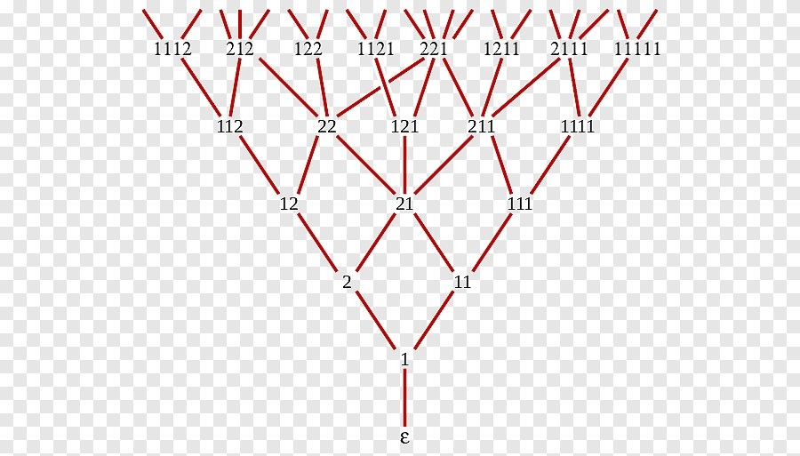

La struttura di cui parlerò qui sotto era nota nell'India antica mille anni prima di Fibonacci stesso ed è stata riscoperta nel 1988 da due matematici; e l'intero grafo si costruisce interamente con stringhe composte solo dalle cifre 1 e 2 — oppure, se sottraiamo uno, otteniamo 0/1 e una forma binaria.
Prendiamo una qualsiasi stringa finita di cifre 1 e 2, per esempio «11212», sommiamo le cifre, 1 + 1 + 2 + 1 + 2 = 7, e otteniamo il rango di quella stringa. Ora una domanda semplice: quante stringhe di un dato rango esistono? Una stringa dello stesso rango si può ottenere in due modi, o aggiungendo la cifra 2 a una stringa di rango r-2, o aggiungendo la cifra 1 a una stringa di rango r-1, e altre possibilità non ce ne sono, perché nel nostro alfabeto di uni e due non ci sono altre cifre.
rango 0: «» → 1
rango 1: 1 → 1
rango 2: 11, 2 → 2
rango 3: 111, 12, 21 → 3
rango 4: 1111, 112, 121, 211, 22 → 5
rango 5: … → 8
Avete notato quel sospetto 1, 1, 2, 3, 5, 8 sulla destra? Sì... è la successione di Fibonacci f(r) = f(r-1) + f(r-2), con la piccola condizione che f(0) = 1 (la stringa vuota) e f(1) = 1 (l'unica stringa «1»), per cui l'intera successione risulta spostata di una posizione rispetto ai numeri di Fibonacci canonici, e f(r) = F(r+1).
La stessa identica cosa la facevano i prosodisti indiani nei loro versi, dove una sillaba breve occupa un'unità di durata e una lunga due, cosa che permetteva di scandire bene il ritmo e di ottenere costruzioni eufoniche nel testo — quindi in questo contesto i numeri di Fibonacci sono più vecchi di Fibonacci stesso. Curiosi di sapere cosa lega i versi, Fibonacci e l'albero tecnologico nei giochi? Andiamo...
La bella teoria
Adesso prendiamo le combinazioni ottenute e proviamo a farne un grafo: viene fuori questa bella struttura.
rango 4: 1111 112 121 211 22
│ │ │ │ │ ││
│ │ │ │ └──┐ ││
rango 3: 111 ────┼───────┼──────┘ 21─┘│
│ 12 ─────┼────────────┼──┘
│ │ │ │
rango 2: 11 ──────┼──────┼────────────┘
│ └──── 2
│ │
rango 1: \────── 1 ───/
│
rango 0: ""Si chiama grafo di Young-Fibonacci e ha un vertice per ogni stringa, inclusa quella vuota, mentre come vicini di una stringa s si dichiarano i risultati di quattro operazioni:
- inserire la cifra 1 da qualche parte a sinistra dell'uno più a sinistra, e se nella stringa non ci sono uni, allora in un punto qualsiasi.
- sostituire l'uno più a sinistra con un due.
- cancellare l'uno più a sinistra.
- sostituire con un uno un qualsiasi due che non abbia alcun uno alla propria sinistra.
Queste operazioni si dividono in due coppie mutuamente inverse: la prima è annullata dalla terza, la seconda dalla quarta, per cui il grafo si può considerare non orientato, anche se di solito lo si disegna orientato, dirigendo ogni arco dal rango minore verso quello maggiore. Dalle stesse regole discendono proprietà interessanti delle stringhe: la stringa 211 ha due predecessori immediati, 111 e 21, anche la stringa 22 ne ha due, 12 e 21, mentre la stringa 121 ne ha uno solo.
I matematici (Fomin e Stanley) hanno notato queste proprietà e le hanno descritte nei loro lavori:
- Il grafo è connesso: ogni stringa non vuota ha sempre un'operazione che ne abbassa il rango, quindi da qualsiasi vertice si può scendere fino alla stringa vuota, e invertendo il percorso si ottiene una strada dalla stringa vuota verso qualunque punto.
- Il grafo è graduato: la lunghezza di qualsiasi cammino orientato è esattamente la differenza dei ranghi dei suoi estremi (non esistono «scorciatoie che aggirano»).
- Per due vertici distinti qualsiasi u e v, il numero dei loro predecessori immediati comuni è uguale al numero dei loro successori immediati comuni, e quel numero è sempre zero oppure uno.
- Il grado uscente di qualsiasi vertice è di uno maggiore di quello entrante, per ciascun vertice preso singolarmente.
"" out=1 in=0
1 out=2 in=1 (su: 11, 2 | giù: "")
11 out=2 in=1 (su: 111, 21 | giù: 1)
2 out=2 in=1 (su: 12, 21 | giù: 1)
21 out=3 in=2 (su: 121, 211, 22 | giù: 2, 11)
22 out=3 in=2 (su: 122, 212, 221 | giù: 12, 21)Da dove viene quell'uno in più? L'inserimento di un uno dà tante possibilità quante sono le posizioni a sinistra dell'uno più a sinistra, cioè il numero di due iniziali più uno, mentre l'operazione quattro, che porta verso il basso, ne dà una in meno. La sostituzione dell'uno più a sinistra con un due e la cancellazione dell'uno più a sinistra danno una possibilità ciascuna e si compensano a vicenda. Fomin ha chiamato Y-grafo un grafo con questo insieme di proprietà, beh, perché somiglia davvero a delle ramificazioni a Y. Stanley nei suoi lavori ha mostrato, ha dimostrato, che a ogni rango si può trovare un reticolo riconducibile allo schema qui sotto: 21, 22, 121, 211 e 221.
221 (rango 5)
/ | \
22 121 211 (rango 4)
\ | /
21 (rango 3)Non siete ancora stanchi? Ora, come tutto questo si lega ai giochi...
Young, Fibonacci e la disposizione dei mostri
Tutto quello che è scritto sopra suona come matematica per amore della matematica... non so perché ce la insegnassero all'università (ho pure scritto un paio di esercitazioni di laboratorio sull'argomento e probabilmente l'avrei dimenticata del tutto), a quanto pare perché potessi sfoggiare la mia cultura davanti ai level designer. Ed è qui che ci avviciniamo ai giochi.
I designer di due sparatutto di due studi diversi dispongono i nemici sul livello seguendo questo grafo. I designer stessi non sapevano di applicare un diagramma di Hasse (e il suo caso particolare, il grafo di Young-Fibonacci); credo che non conoscessero nemmeno queste parole. Semplicemente, nel corso della messa a punto e dei test dei livelli è emerso che rovesciare addosso al giocatore i nemici tutti in mucchio non è interessante e stanca in fretta, e che è meglio spezzare il livello in segmenti e disporvi i nemici secondo una certa formula segreta.
Anche passare di colpo a «tanti» nemici riduce l'interesse, perciò la disposizione in quella formula segreta descriveva l'aggiunta di un nemico semplice al numero già presente nel punto di spawn corrente se il giocatore andava da una parte, e la fusione di due nemici deboli in uno più forte se andava dall'altra. Non vi ricorda niente?
In uno studio la formula segreta era stata inventata parecchio tempo fa; quel designer se n'è andato da un pezzo, ma le sue conoscenze le ha tramandate, e nessuno ha mai provato a correggerla, perché funziona, e allora perché romperla. Nell'altro studio quel grafo, capovolto, stava nel cassetto del lead designer e veniva tirato fuori un paio di volte l'anno per formare i nuovi arrivati; da dove il lead stesso l'avesse preso, la storia tace.
Il rango della stringa, cioè la somma delle sue cifre, si rivela essere il budget del segmento, e l'intera curva di tensione lungo il livello diventa una sequenza di ranghi, che il designer imposta attraverso la disposizione dei nemici nei punti di spawn.
Non si è fatto alcun tentativo di ricondurre un bandito e un mostro che carica frontalmente a una scala di costo comune, perché una scala del genere comincia a mentire, e allargare l'alfabeto {1,2} con nuove lettere rompeva lo schema e abbassava l'interesse nei focus group: cioè tutto deve funzionare all'interno di un solo tipo di nemico. Volete un altro tipo di nemico? Fategli la sua fibo-younghianata e disponetela lungo il livello. Formalmente questo è il comportamento naturale di un algoritmo del genere, e quell'unità, per un nemico di qualsiasi tipo, si limita a spostare la difficoltà, ma...
Ma dà al designer la possibilità di piazzare i nemici in qualsiasi punto del livello, appoggiandosi ai dati degli scontri e dei punti di spawn precedenti, senza rimettere mano a tutto ciò che sta più avanti nel corridoio. In più dà una progressione di difficoltà corretta: un grafo così è graduato e la lunghezza di qualsiasi cammino è pari alla differenza dei ranghi, e cammini alternativi non esistono, cosa dimostrata dai matematici. Vuol dire che il passaggio tra due segmenti adiacenti della curva si scompone sempre in un numero noto di «aggiunto-tolto un nemico», e il designer, se segue le regole, non può saltare per sbaglio un gradino di difficoltà.
E finalmente diventa possibile calcolare per bene il livello di difficoltà senza chiamare gli infermieri. Il designer descrive la disposizione in cima e il punto di convergenza, e tutto ciò che sta in mezzo viene calcolato da un semplice script in Python. E il complesso sistema di combattimento di un livello diventa i numeri di una ripartizione di budget tra nemici, permettendo di rendere tre percorsi diversi dello stesso scontro identici per difficoltà e diversi per sensazione.
Fibonacci, Young e gli alberi delle abilità
Lavorando ormai in un altro studio, su un altro progetto di un genere completamente diverso, ho scoperto che il designer dell'albero tecnologico usava uno schema sospettosamente simile per tarare il prezzo dello sviluppo. Preciso che non si tratta della rappresentazione dell'albero tecnologico o della crescita del personaggio che vedete a schermo nel gioco. È un foglio con l'albero tecnologico disegnato a scaletta, in modo che voi come giocatori vi ritroviate una mappa di sviluppo del personaggio bilanciata e build, o assetti, o razze di pari forza più o meno stabili. E se quella scaletta non la disegnate in anticipo, vi ritroverete magari con caratteristiche interessanti in ogni razza o build, ma bilanciarle diventerà difficile e dovrete introdurre elementi o meccaniche aggiuntive.
Ramo A ■ ■ ■ ■ □ □
Ramo B ■ ■ ■ □ □
Ramo C ■ ■ □ □
Ramo D ■ □
Stato = (4, 3, 2, 1), rango 10.
La parte piena forma sempre una scaletta, non crescente dall'alto in basso.Il reticolo di Young permette di disporre le tecnologie in una griglia, dove la riga è un ramo di sviluppo e la colonna è la profondità al suo interno. Poi introduciamo la regola che una casella (una tecnologia potente) si può prendere solo se sono già state prese la casella a sinistra e la casella sopra. L'insieme degli stati di ricerca ammissibili sotto questa regola coincide esattamente con l'insieme dei diagrammi di Young che stanno dentro questa griglia. Cioè le domande «come bilanciare due razze» e «quanto bisogna ancora aggiungere per ottenere build bilanciate» adesso si risolvono con dell'aritmetica su un array, senza percorrere un grafo di dipendenze, e perché tiro fuori questa cosa... Se nel vostro gioco ci sono due razze di nemici, tabelle del genere le potete calcolare su carta, ma in AoE2 oggi ci sono circa cinquanta razze, ognuna con il proprio albero tecnologico, che devono essere bilanciate le une con le altre. Bilanciare una cosa così a mano? Probabilmente si può...
Per il bilanciamento del gioco è una buona cosa, perché non ci saranno particolarità nascoste; per la rigiocabilità è piuttosto una brutta cosa, perché tutti i percorsi risultano della stessa lunghezza e in definitiva intercambiabili, e allora la sensazione di scelta bisogna crearla con altri mezzi. Preciso che sotto forma di codice queste tabelle (l'albero tecnologico) non vengono generate così in nessun progetto che io conosca. Sia in Age of Empires 2 sia in Stellaris il grafo delle tecnologie è fatto a mano, e Stellaris per giunta ci butta sopra anche tecnologie casuali, cosa quanto mai lontana dal determinismo reticolare. Il discorso riguarda proprio gli strumenti e come è fatto lo spazio in cui questi alberi tecnologici si creano, non il runtime.
A cosa serve tutto questo
Domanda naturale, e probabilmente al giocatore non serve. Vista da fuori sembra una capra con la fisarmonica: gli sviluppatori hanno preso, vedete un po', delle stringhe di due cifre, ci hanno appeso quattro regole apparentemente arbitrarie e adesso sono contenti che ne sia venuto fuori qualcosa di armonioso.
Ma tutta questa costruzione è interessante per come ci sono saltati fuori i numeri di Fibonacci, che però saltano fuori più o meno ovunque si conti qualcosa. È interessante anche perché quattro regole semplici possono generare un design del livello e del combattimento abbastanza interessante da non lasciar rilassare il giocatore e allo stesso tempo da non rompere la progressione della difficoltà.
I designer dei livelli e dell'albero tecnologico ci sono arrivati per tentativi ed errori, quando bastava immergersi nella teoria degli insiemi parzialmente ordinati e delle riduzioni transitive con i diagrammi di Hasse. Ma di Hasse di sicuro non sanno nulla, ho chiesto...
← Tutti gli articoli